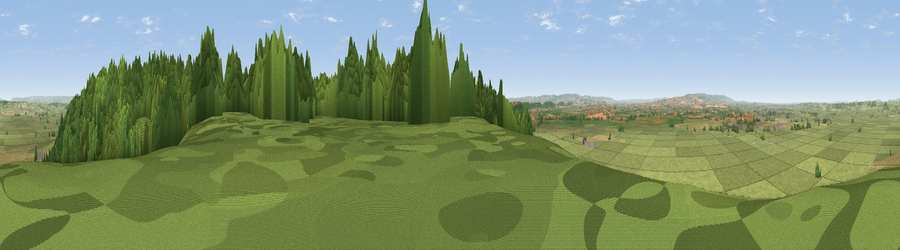

Viewpoint near Aller
#9191 in England · top 26% of its area beats it · near AllerWhere it is
The exact computed spot (ST 40550 30512). Click the marker for map links.
The view, rendered

A 360° render of this exact spot computed from the terrain model, tree cover and land cover — summer colours, afternoon light, calibrated against photographs of famous viewpoints. Real trees, hedges and buildings will differ in detail.
The panorama
Grey silhouette: terrain skyline in each direction (720 bearings, Earth curvature and refraction included). Dashed green: skyline with trees (+15 m) and buildings (+8 m) as obstacles. Blue strip: how far the ground is visible on each bearing.
Where the view opens
Wedge length = distance to the farthest visible ground on that bearing (vegetation-aware). Rings at 10, 25 and 50 km.
What fills the view
65% grassland · 26% woodland · 7% cropland · 1% built-up
Angular shares of the visible panorama (visual magnitude), not map area. Landscape diversity 0.38 (0–1 Shannon).
Key numbers
More beautiful places nearby
The staircase of upgrades: each row has a higher view potential than everything closer. Driving times are estimates from straight-line distance, calibrated against real road routing — check an actual route before setting out.
| Place | Direction | Drive | Score |
|---|---|---|---|
| Lollover Hill | ENE · 7 km | ~15 min | 66.4 |
| Socombe Hill | NNW · 8 km | ~16 min | 76.4 |
| Viewpoint near Buckland St. Mary | SW · 20 km | ~33 min | 77.3 |
| Viewpoint near Enmore | WNW · 20 km | ~34 min | 77.6 |
| Viewpoint near Hewish | S · 20 km | ~34 min | 78.5 |
| Cothelstone Hill | W · 22 km | ~36 min | 82.1 |
| Viewpoint near West Bagborough | W · 23 km | ~38 min | 84.3 |
| Wills Neck | W · 24 km | ~40 min | 85.7 |
51.07085, -2.84988 · source: screening · position refined by local search. Computed location — check access rights before visiting.